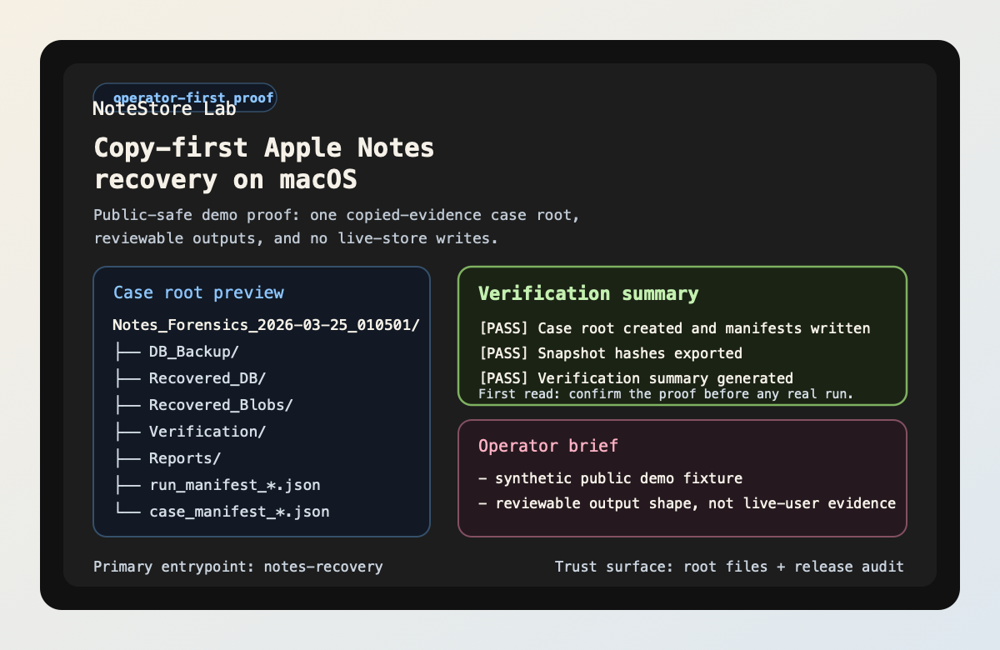

Stay on the proof path first: demo, AI review, bounded question, then doctor.
Copy-first recovery · operator-first proof · builder lane second
Prove the copied-evidence workflow before you touch a real case.
Noteyard is a macOS Apple Notes recovery and review toolkit built around copied case roots, reviewable outputs, bounded AI assistance, and a local read-mostly MCP surface. The product story is intentionally ordered: first prove the workflow shape, then inspect the evidence surfaces, then let AI or local agents ride on the same case root.
macOS only
Zero-risk demo
Evidence-backed case Q&A
Local MCP for Codex / Claude Code
Core truth: recovery and review stay primary. AI
is a bounded review layer, and MCP is a local builder surface that
only becomes useful after the operator proof path already feels
real.

Arrival map
Arrive by goal, not by file type.
The front door gets easier when it acts like an evidence desk. Pick the question you arrived with, then take the shortest route built for that question instead of wandering through README, proof, and builder pages in random order.
Use the use-case map when you need to separate operator review, AI triage, MCP consumption, and case comparison.
Only after the case-root story feels real should you open the Codex / Claude Code wrapper examples and MCP entrypoint guidance.
Workflow shape
One case, three consumers
The product gets stronger when the same case root supports human review, bounded AI help, and local agents without opening a second data plane.
Prove the copied-evidence workflow once. Start with demo,
ai-review --demo, ask-case --demo,
then doctor. The repo leaves behind manifests, verification
previews, timelines, reports, and one review index instead of
ad hoc files.
Summarize before you dig deeper. ai-review and
ask-case sit on derived artifacts first. They rank
what to inspect next, cite evidence, and keep the recovery
engine separate from the explanation layer.
Mount the same case root in Codex or Claude Code. The MCP surface stays local stdio-first, read-mostly, and case-root-centric. That makes reuse easy without inventing a hosted platform.
Builder lane
Builder path: Codex and Claude Code
Once the operator path is clear, register the shipped stdio MCP entrypoint and point it at a real case root. This is a builder / local-agent entrypoint, not a hosted API.
Registration command:
Carry this command into the host wrapper you use. The stable part is the executable plus the case-root-centric contract.
.venv/bin/python -m notes_recovery.mcp.server --case-dir ./output/Notes_Forensics_<run_ts>Codex project config
Use the project .codex/config.toml shape and keep
the path base honest.
[mcp_servers.noteyard]
command = "../.venv/bin/python"
args = [
"-m",
"notes_recovery.mcp.server",
"--case-dir",
"./output/Notes_Forensics_<run_ts>",
]
cwd = ".."Claude Code project config
Use the project .mcp.json shape and point it at
the same shipped local stdio command.
{
"mcpServers": {
"noteyard": {
"command": ".venv/bin/python",
"args": [
"-m",
"notes_recovery.mcp.server",
"--case-dir",
"./output/Notes_Forensics_<run_ts>"
]
}
}
}Host fit notes
Good fit for the shipped local stdio MCP contract and case-root-centric workflow.
Good fit for the same local stdio MCP contract. Carry the executable command into the host wrapper you use.
Comparison path only.
Compatible bundle path now shipped. Reuse the same local MCP command and the bundled archive build, but do not treat the live secondary ClawHub skill listing as proof of a first-class OpenClaw wrapper or bundle listing.
Fastest host smoke: run demo, run
ask-case --demo, then register the exact
notes_recovery.mcp.server command against one
case root.
Proof surfaces
Proof, distribution, and support
Once the first success path lands, these are the three surfaces that stop the repo from feeling hand-wavy: proof, listing truth, and the support contract.
See the exact repo-side proof, remote read-back proof, and the manual external tail that still lives in GitHub Settings or platform controls.
Check which registry and plugin surfaces are shipped, public-ready, or still waiting on official listing read-back.
Use the issue route, required report details, and support boundary without guessing which surface the maintainer actually supports.
Reading shelf
Keep reading
Think of this as the shelf behind the front desk: operator path first, then deeper truth, then builder and support surfaces.